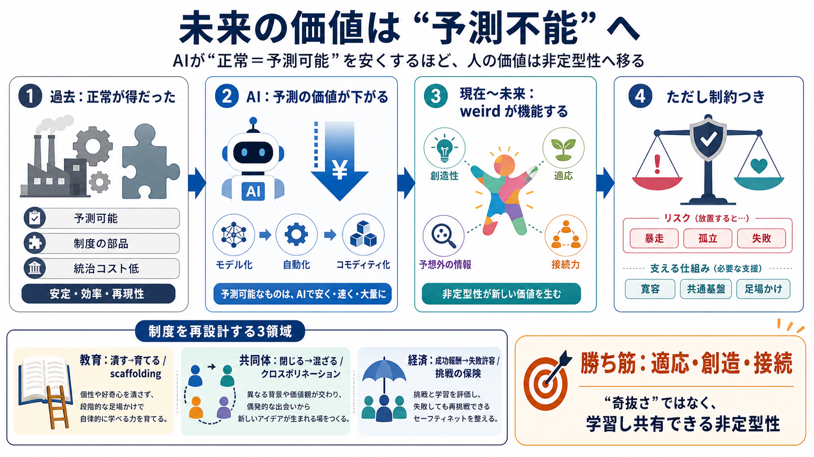

observed evidence of AI-driven labor market displacement ...
© 2026 Dehouche. This is an open-access article distributed under the terms of the Creative Commons Attribution License…

© 2026 Dehouche. This is an open-access article distributed under the terms of the Creative Commons Attribution License…
In the long run, companies are looking to AI to increase productivity; however, if employees are relying on AI too heavi…
9. AI Reshapes Global Labour Market Into Two Distinct Paths, Rewarding Human Skills: PwC 2026 Global AI Jobs Barometer, …
Engage stakeholders (including trusts and foundations, venture capitalists, tech companies, researchers and workers them…
#### Labor Markets